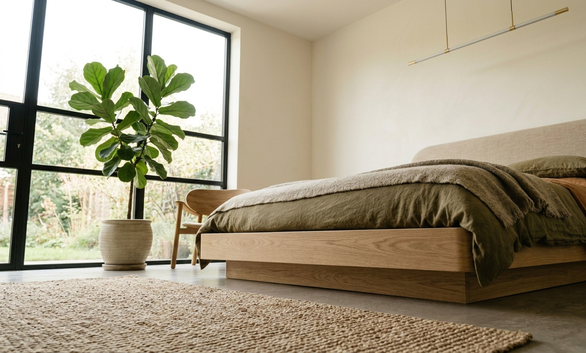
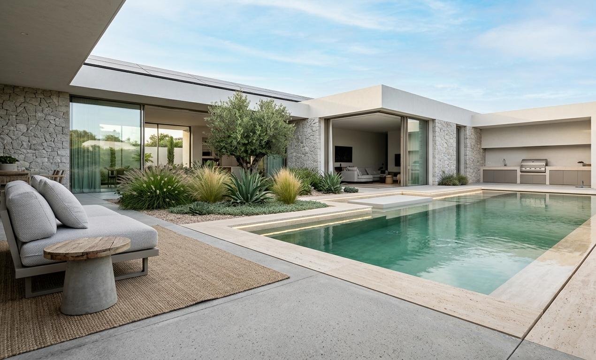

El cuarto de baño ha experimentado una metamorfosis absoluta en el diseño de viviendas contemporáneas. Ha dejado de concebirse como una simple zona de aseo rápido para consolidarse como un espacio de desconexión, bienestar y meditación diaria. Una zona tipo "spa" en casa es hoy en día el complemento perfecto para cualquier reforma residencial de lujo en la Comunidad de Madrid.
Para conseguir un baño de lujo auténtico, la planificación espacial debe priorizar la amplitud visual y el orden. Esto se logra eliminando el ruido visual mediante la instalación de sanitarios suspendidos con cisternas empotradas en el muro. Esta solución arquitectónica no solo libera espacio físico en el suelo facilitando enormemente la limpieza, sino que además genera líneas geométricas muy puras y elegantes.
En Tadelart Obras y Reformas, cuando ejecutamos tabiquería húmeda para empotrar cisternas de marcas prestigiosas como Geberit, aseguramos un aislamiento acústico reforzado con paneles de alta densidad. Así, evitamos que el llenado del tanque o las descargas de agua molesten a los dormitorios adyacentes durante la noche, cuidando cada detalle constructivo de la reforma.
Platos de Ducha a Ras de Suelo
La sustitución de la vieja bañera por un plato de ducha a ras de suelo es la reforma estrella por su comodidad y estética minimalista. Los platos de resinas minerales de colores personalizados a juego con el alicatado, o las duchas de obra revestidas de microcemento o piedra natural continua, eliminan cualquier escalón de acceso, incrementando la seguridad y fluidez visual del espacio.


Para garantizar una evacuación de agua óptima en duchas de obra continuas, realizamos pendientes precisas del 2% y colocamos canaletas lineales de desagüe de acero inoxidable de alta capacidad de drenaje. Esto impide cualquier acumulación de agua perimetral y permite colocar piezas porcelánicas enteras de gran formato reduciendo al mínimo la cantidad de juntas expuestas a la humedad.
Las mamparas de ducha de vidrio templado de seguridad de 8 mm con perfiles ocultos o anclajes a pared en negro mate o latón cepillado son indispensables. Recomendamos aplicar siempre tratamientos antical de fábrica para mantener la transparencia del vidrio y evitar la acumulación de sedimentos calcáreos, muy comunes en el agua de ciertas zonas de Madrid.
Griferías Empotradas de Alta Costura
Las griferías son las joyas de la corona en un baño de lujo. Las griferías empotradas en pared de caño curvo o geométrico liberan espacio en la encimera del lavabo y aportan una estética extremadamente sofisticada. Los acabados metálicos cepillados (oro cepillado, bronce, oro rosa, negro mate) han desbancado por completo al tradicional cromo brillante, coordinándose con los accesorios del baño.


En el interior de la ducha, los rociadores de gran formato encastrados en el techo con efecto lluvia, cascada o nebulización ofrecen una experiencia sensorial spa inigualable. Para complementar, las griferías termostáticas inteligentes de marcas como Grohe o Hansgrohe mantienen la temperatura exacta del agua constante, evitando quemaduras y optimizando el consumo energético.
El revestimiento es el lienzo principal. Los porcelánicos rectificados de gran formato (placas de 120x260 cm) que imitan mármoles exclusivos (como el Calacatta, el Carrara o el Nero Marquina) aportan majestuosidad sin las desventajas de porosidad y mantenimiento de la piedra natural. Con juntas mínimas de 1 mm coloreadas en el mismo tono del porcelánico, las paredes parecen bloques monolíticos continuos.
Iluminación y Nichos LED Integrados
La iluminación define la atmósfera relajante del baño. La luz directa y fría sobre el espejo puede resultar molesta por las mañanas; por ello, diseñamos retroiluminaciones LED perimetrales cálidas tras los espejos circulares o rectangulares de gran tamaño. Esto genera una luz difusa que elimina las sombras en el rostro, ideal para el maquillaje y afeitado diario.

Asimismo, los nichos u hornacinas empotrados en la pared de la ducha para colocar los geles y champús son elementos de diseño indispensables que sustituyen a los antiguos cestillos metálicos colgados. Iluminar el interior de estas hornacinas con tiras de LED estancas IP67 de luz cálida aporta una profundidad visual y un efecto dramático digno de los mejores hoteles de lujo.
El almacenamiento debe ser discreto y de gran calidad. Los muebles de baño suspendidos realizados a medida con maderas tratadas contra la humedad y acabados mate sedosos maximizan la calidez espacial. Cajones con organizadores interiores aterciopelados y guías de cierre amortiguado (soft-close) garantizan un tacto y funcionamiento sumamente agradable.
No podemos olvidar la climatización. La instalación de suelos radiantes es especialmente placentera en el cuarto de baño, manteniendo el pavimento templado al salir descalzo de la ducha. Como soporte, los toalleros eléctricos decorativos en negro mate u oro cepillado mantienen las toallas calientes y secas, funcionando además como elementos escultóricos en la pared.
En Tadelart Obras y Reformas cuidamos meticulosamente la impermeabilización de todas las zonas de agua mediante membranas elásticas impermeables (tipo Kerdi) bajo los azulejos. Esta fase constructiva oculta es la que garantiza que tu baño de lujo permanezca libre de filtraciones y humedades durante décadas, protegiendo tu inversión y la tranquilidad de tus vecinos.
En resumen, reformar un baño para transformarlo en un oasis de relajación premium requiere una perfecta combinación de técnica constructiva, diseño de interiores de vanguardia y selección rigurosa de materiales. Desde las pendientes de evacuación de agua hasta el tono exacto de las luces LED, cada elemento debe planificarse al detalle. Confiar tu reforma a Tadelart es el primer paso para tener el spa de diseño que siempre has deseado en tu propio hogar.